Camshaft, Removing and Installing
Camshaft, removing and installing
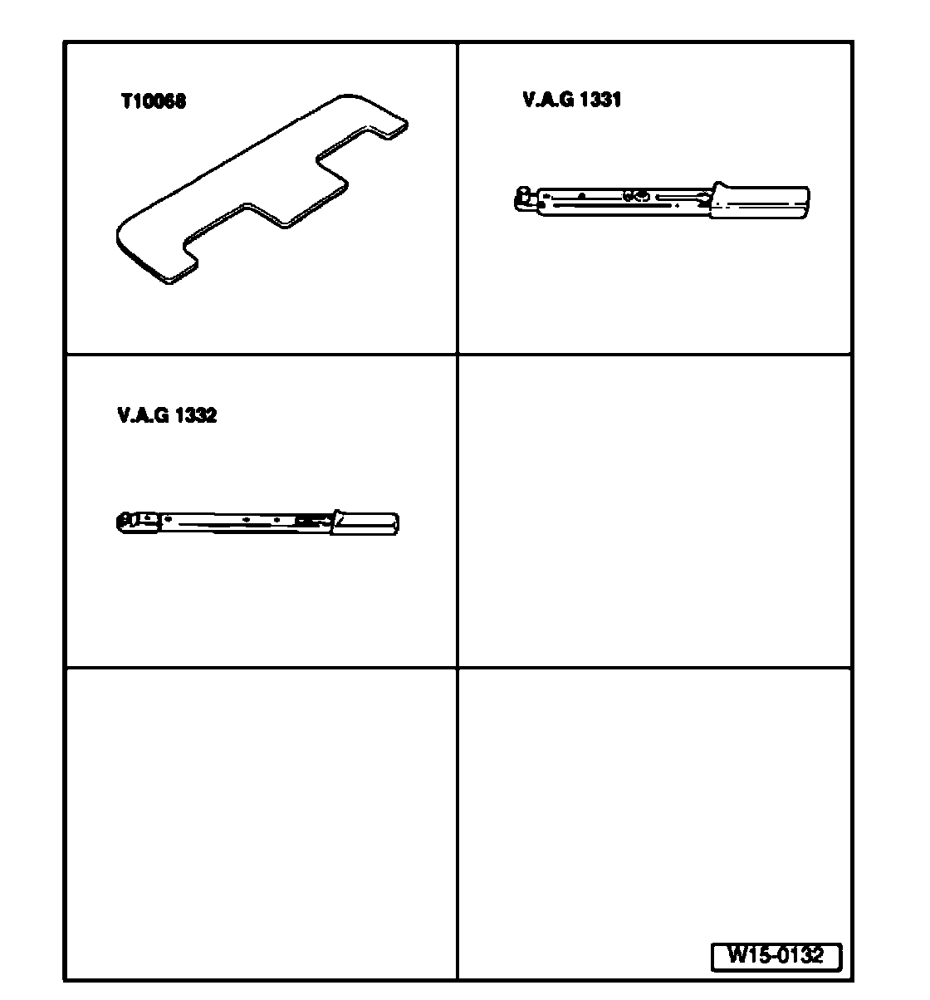
Special tools, testers and auxiliary items required
^ Camshaft bar T10068A
^ Torque wrench (5..0.50 Nm) V.A.G 1331
^ Torque wrench (40... 200 Nm) V.A.G 1332
^ Sealant AMV 174 004 01
^ Sealant AMV 176 501
Removing
Note:
^ The camshafts can only be removed with the engine or cylinder head removed.
Caution! When doing any repair work, especially in the engine compartment, pay attention to the following due to clearance issues:
^ Route all the various lines (e.g. for fuel, hydraulics, EVAP system, coolant, refrigerant, brake fluid and vacuum lines and hoses) and electrical wiring so that the original positions are restored.
^ Ensure sufficient clearance to all moving or hot components.
Work procedure
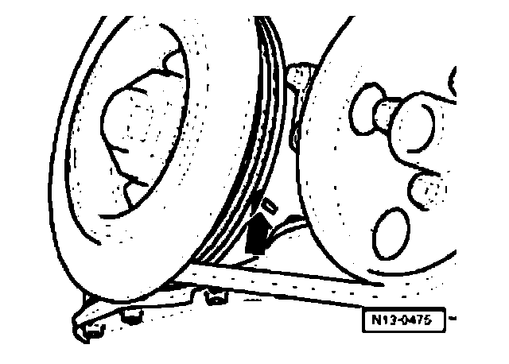
- Set crankshaft to TDC No. 1 Cyl. marks - arrow - by turning crankshaft on vibration damper securing bolt in direction of engine rotation.
- Remove intake manifold and cylinder head cover
- Remove thermostat housing.
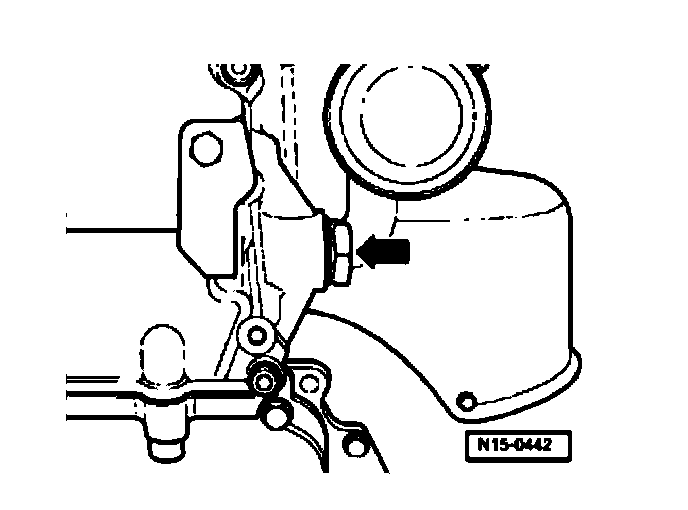
- Remove camshaft roller chain tensioner - arrow -
- Remove camshaft cover.
Note:
^ The cover has a "hidden bolt". The thermostat housing must be removed before this bolt can be removed.
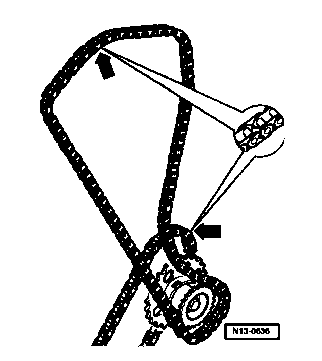
- Mark roller chains before removing (e.g. with paint, arrow pointing in direction of rotation).
Note:
^ Do not mark chain with a center punch or any similar means!
- First remove exhaust camshaft adjuster.
Note:
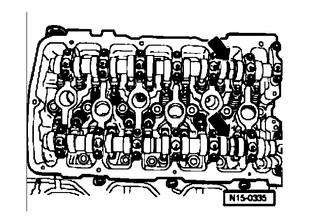
^ Counter-hold only with 32 mm open end wrench on camshaft - arrow -. Camshaft bar T10068 must be removed while sprockets are loosened or tightened.
- Remove camshaft adjuster together with camshaft roller chain from intake camshaft.
- Place camshaft roller chain aside.
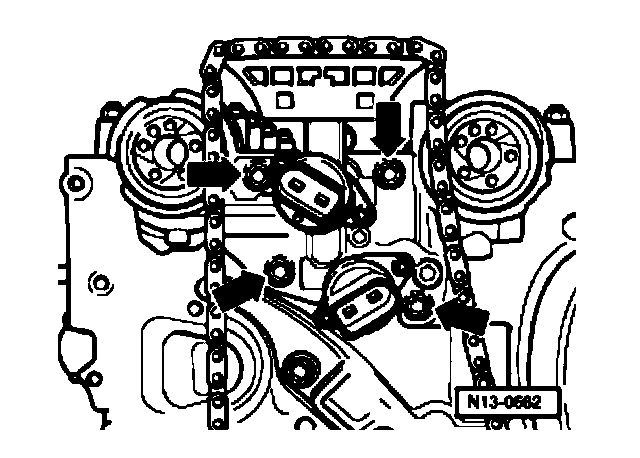
- Unbolt control housing from cylinder head - arrows
- Pull control housing carefully off camshaft seals.
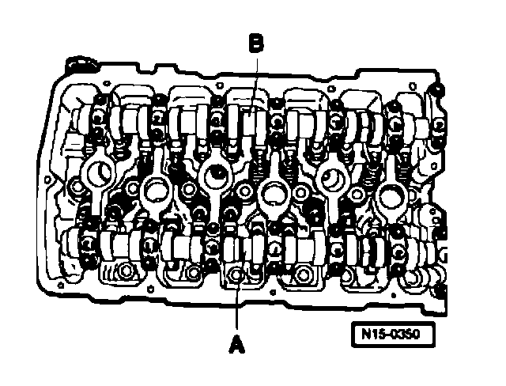
A - Intake camshaft
- First remove bearing caps 1 and 13.
- Remove bearing caps 3 and 11.
- Remove bearing cap 7.
- Loosen bearing caps 5 and 9 alternately and diagonally, and remove.
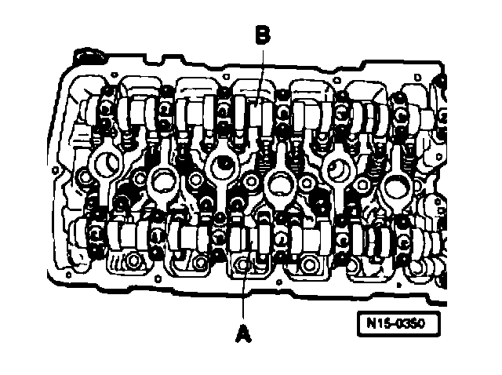
B - Exhaust camshaft
- First remove bearing caps 2 and 14.
- Remove bearing caps 4 and 12.
- Remove bearing cap 8.
- Loosen bearing caps 6 and 10 alternately and diagonally and remove.
Continuation for both camshafts
- Carefully remove camshafts and place on a clean surface.
- Remove roller rocker lever together with support elements and place on a clean surface.
Note:
^ Make sure the roller rocker levers and support elements are not interchanged.
Installing
Requirements
^ When installing camshafts, the cam lobes for cylinder 1 must point upward.
Work procedure
- Lightly coat contact surfaces of bearing caps 7 and 8 with grease G 052 723 A2 before installing.
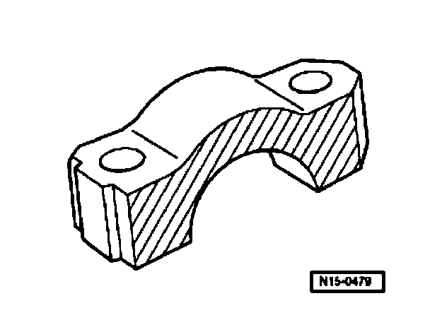
- Insert support element in cylinder head and install roller rocker lever onto respective valve stem end and support element.
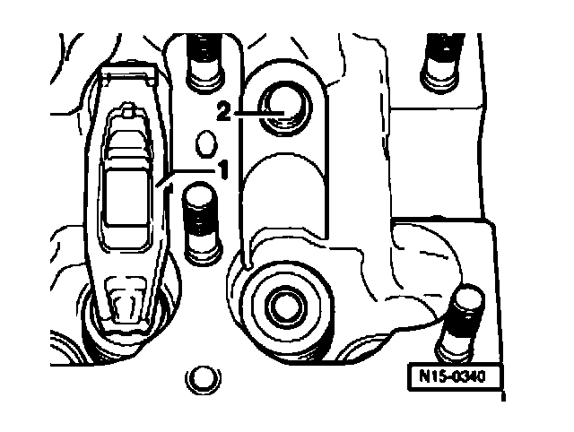
- Ensure that all roller rocker levers seat properly on valve stem ends - 1 - and are clipped onto respective support elements - 2 -.
- Oil running surfaces of both camshafts.
- Place respective camshaft carefully in camshaft bearings of cylinder head. Observe camshaft identification.
Note:

^ Observe installed position of bearing caps.-
^ Points of bearing caps - arrow A - of intake and exhaust camshaft face outward.
^ Identification on bearing caps is legible when read from intake side.

A - Intake camshaft
- Tighten bearing caps 5 and 9 alternately and diagonally to 5 Nm and 1/8 turn (45°) further.
- Install bearing caps 1 and 13 and tighten to 5 Nm and 1/8 turn (45°) further.
- Install bearing cap 7 and tighten to 5 Nm and 1/8 turn (45°) further.
- Install bearing caps 3 and 11 and tighten to 5 Nm and 1/8 turn (45°) further.

B - Exhaust camshaft
- Tighten bearing caps 6 and 10 alternately and diagonally to 5 Nm and 1/8 turn (45°) further.
- Install bearing caps 2 and 14 and tighten to 5 Nm and 1/8 turn (45°) further.
- Install bearing cap 8 and tighten to 5 Nm and 1/8 turn (45°) further.
- Install bearing caps 4 and 12 and tighten to 5 Nm and 1/8 turn (45°) further.
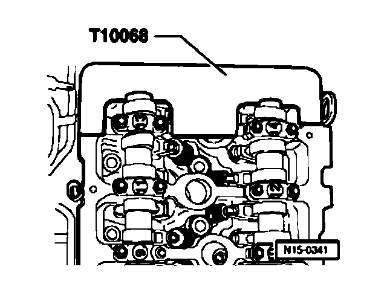
Continuation for both camshafts
- Position camshafts in cylinder head to TDC No. 1 cylinder.
- Camshaft bar T10068A must engage in both shaft grooves.
- Before installing, check the control housing screen for contamination. Check Control Housing Screen For Contamination
- Before installing control housing, lightly lubricate surfaces in control housing contacting camshaft seals.
- Lightly lubricate contact surfaces of camshaft seals and slowly push control housing over camshaft seals.
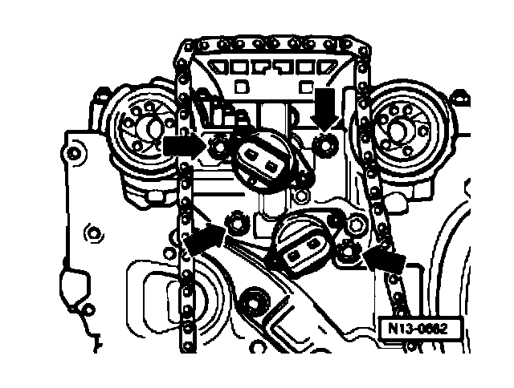
- Install control housing - arrows - and fasten with 8 Nm.
Adjust valve timing. Refer to Valve timing, adjusting.
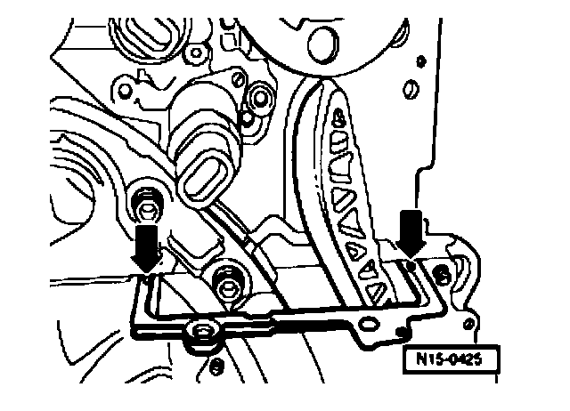
- Clean old sealing compound from the 3 mm holes in the cylinder head gasket - arrows
Note:
^ With the cylinder head installed only half of the holes in the cylinder head gasket are visible.
- Fill 3 mm drilling in cylinder head gasket with sealant AMV 174 004 01 and apply a raised drop of sealant at each of these points.
Caution! The sealant AMV 174 004 01 hardens quickly.
- Lubricate O-ring for oil channel seal and install into cover.
- Coat sealing surface of cover with sealant AMV 176 501 and install immediately.
- First insert all fastening bolts and lightly tighten.
- Tighten bolts M8 to 23 Nm, and then tighten bolts M6 to 8 Nm.
- Install camshaft roller chain tensioner and tighten to 40 Nm.